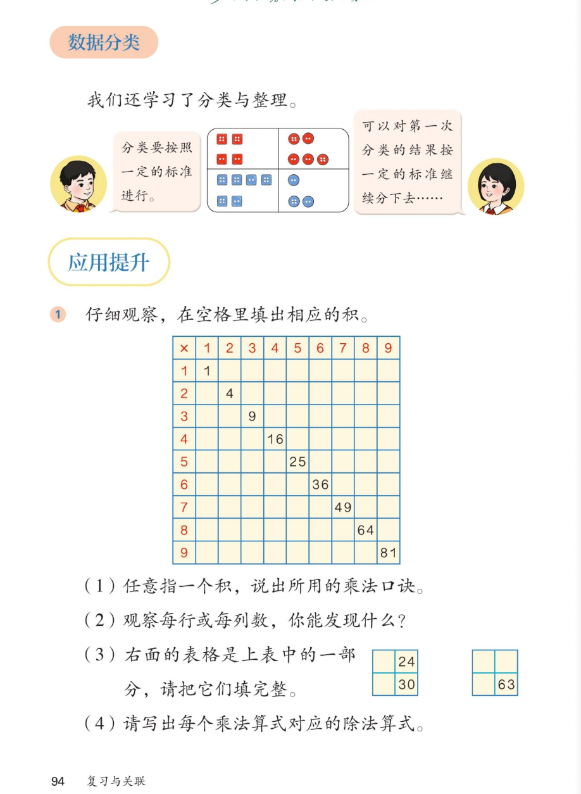

🔊 六、复习与关联 · 课本第 94 页 · 数据分类 与 应用提升①
人教版《数学》二年级上册 · 有声图文带读 · 先想后看解析 · 分类再分类 · 九九乘法表找规律
题数
6
认知
2
强化
3
拓展
1
本页重点
按标准分类 · 乘法表对角线秘密 · 一积多口诀
🎧 分两步学：
① 解析教材图片
——纯声音读图，读到哪一块哪一块闪动提示；关键处先倒计时让你思考，再在图片下方给出解析并朗读。
② 分层提问练习
——六道分层题（认知 / 强化 / 拓展），先思考再展开解析、朗读参考答案；这一步不再回到图片。
也可以随时点任意一句话、图上任意一块单独听；点课本文字卡还会展开答案。
教材图片（点块听读，读到哪块哪块闪）

📖 人教版《数学》二年级上册 · 课本第 94 页 · 图片仅供个人学习，版权归人民教育出版社所有
🤔 想一想（点我可跳过）
课本的文字（点句子：听读 + 看答案）
分类
分类与整理还记得吗？
看答案 ▾
① 按
一定标准
分：颜色、形状都行；
② 还能
继续分
：先按颜色，再按形状；
💡 标准不同，分的结果也不同。
对角线
乘法表对角线上藏着什么数？
看答案 ▾
1、4、9、16、25、36、49、64、81；
分别是
1×1 到 9×9
的积；
💡 乘数相同的口诀只有一句，如七七四十九。
规律
每行每列的数怎么变？
看答案 ▾
第 3 行：3、6、9、12……
每次多 3
；
第 5 列：5、10、15、20……
每次多 5
；
💡 第几行（列）就每次多几。
小表还原
只有 24 和 30，怎么猜出原来的格子？
看答案 ▾
30=5×6，24=4×6 → 同在第
6
列，填 4、5；
63=
7×9
→ 第二个表填 7、9；
💡 先想口诀，再看行、列对不对得上。
分层提问练习（先想后看解析）
🎯
认知
21 在乘法表里的哪个格子？用哪句口诀？
看解析
🤔 想一想
解析：
口诀：三七二十一；
在第
3 行第 7 列
（也可说第 7 行第 3 列）。
🔶
认知
对角线上的 9 个数分别是怎么来的？
看解析
🤔 想一想
解析：
1×1=1、2×2=4、3×3=9……9×9=81；
两个
相同乘数
相乘的积。
📈
强化
第 6 行的数依次是多少？有什么规律？
看解析
🤔 想一想
解析：
6、12、18、24、30、36、42、48、54；
每次多 6
（多加 1 个 6）；
💡 第几行，每次就多几
🧩
强化
两个小表怎么填完整？说说你的想法。
看解析
🤔 想一想
解析：
24=4×6、30=5×6 → 第 6 列，填 4 和 5；
63=7×9 → 填 7 和 9；
💡 先想口诀，再对位置
✍️
强化
写出积是 24 的乘法算式和对应的除法算式。
看解析
🤔 想一想
解析：
乘法：
4×6=24
（口诀四六二十四）；
除法：
24÷4=6
、
24÷6=4
。
🌈
拓展
乘法表的右上部分是空的，能把整张表填满吗？为什么？
看解析
🤔 想一想
解析：
小九九里 1×2 和 2×1 是
同一句口诀
；
每个积只记一次，右上就空着；
🌈 空格正是小九九和大九九的区别
① 解析教材图片
② 分层提问练习
⏹ 停止
纯声音 + 高亮跟随 · 想好才出解析
← 返回导航